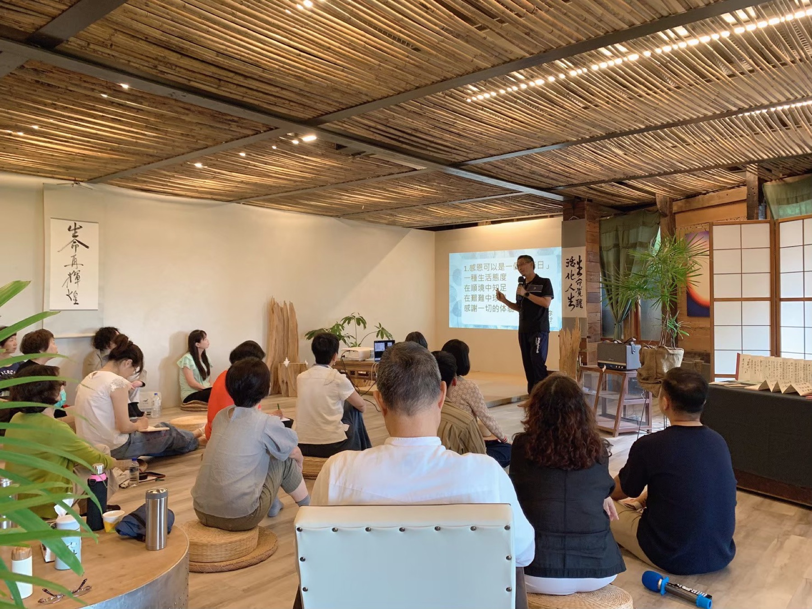
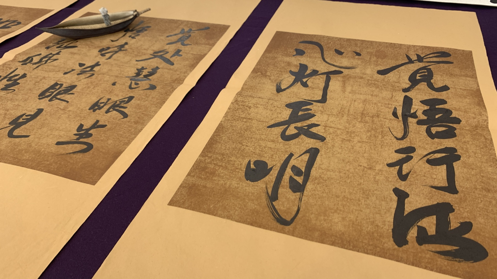

Learning Map
在學習中明理，在生活中修煉，在修煉中轉化，在愿行中發光。
Four paths

於各地共學點，談討生命相關主題學習、交流分享，建立持續成長的習慣。
透過線上與線下實體課程、講座、體驗活動等多元形式，在適合自己的步調中持續學習、實踐與成長。

透過各項修煉方式，將所明白的道理逐步落實、內化，直至成為生命自然流淌的智慧。
透過志工服務，在付出、服務與陪伴中，學習放下自我、拓展心量格局，也讓自己的生命在服務中恢復本有的愛與光。